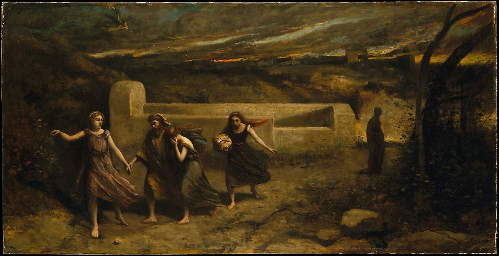

<head>
<meta charset="UTF-8" />
<meta name="keywords" content="drawing, painting" />
<meta name="description" content="drawings by Sunjy" />
<title>Sunjy</title>
<link rel="shortcut icon" type="image/x-icon" href="../../mImages/mCommon/favicon.ico" media="screen" />
<link rel="stylesheet" type="text/css" href="../../mCsses/mCommon/mCssA.css" />
<link rel="stylesheet" type="text/css" href="../../mCsses/mCommon/mCssB.css" />
<link rel="stylesheet" type="text/css" href="../../mCsses/mCommon/mCssC.css" />
<link rel="stylesheet" type="text/css" href="../../mCsses/mCommon/mCssD.css" />
<link rel="stylesheet" type="text/css" href="../../mCsses/mContent/mCssA.css" />
<link rel="stylesheet" type="text/css" href="../../mCsses/mContent/mCssB.css" />
<link rel="stylesheet" type="text/css" href="../../mCsses/mContent/mCssC.css" />
<link rel="stylesheet" type="text/css" href="../../mCsses/mContent/mCssD.css" />
</head>
<script type="text/javascript" src="../../mScripts/mContent/mContentAA.js" /></script>
<script type="text/javascript" src="../../mScripts/mContent/mContentAB.js" /></script>
<script type="text/javascript" src="../../mScripts/mContent/mContentAC.js" /></script>
<script type="text/javascript" src="../../mScripts/mContent/mContentAD.js" /></script>
<script type="text/javascript"></script> 
<script type="text/javascript">
document.write('<div class="mImgAbsolute"></div>');
/*
document.write('<p class="mFontSizeBColor" />From a white paper...</p>');
document.write('<table class="center"><tr><td>');
document.write('');
document.write('</td></tr></table>');
*/
</script>


<script type="text/javascript">
document.write('<p class="mFontSizeBColor" />The Burning of Sodom (formerly &#34;The Destruction of Sodom&#34;)</p>');
document.write('<p class="mFontSizeSColor" />By Camille Corot, 1843 and 1857. This Old Testament scene shows an angel in the sky hurling fire and brimstone down upon Sodom, to destroy the city for its wickedness. At the left, another angel leads Lot and his two daughters to safety. Behind them, Lot&#39;s wife, who looked back in regret despite a warning, has become a pillar of salt.<br><br>Years after Corot exhibited the painting at the Paris Salon of 1844, he cut it down substantially, reducing the sky and the landscape at right. He repainted the foreground in a darker palette and exhibited the revised canvas at the 1857 Salon. By then his stature ensured a better reception from the critics.</p>');
document.write('<table class="center" /><tr><td>');
document.write('<br>Years after Corot exhibited the painting at the Paris Salon of 1844, he cut it down substantially, reducing the sky and the landscape at right. He repainted the foreground in a darker palette and exhibited the revised canvas at the 1857 Salon. By then his stature ensured a better reception from the critics." />');
document.write('</td></tr></table>');
</script>


